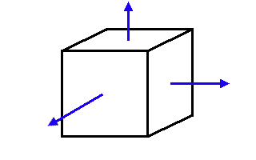

| Are You Normal? |
Last tutorial, we covered some of the advanced objects, like IndexedFaceSets, Extrusions, and ElevationGrids. Now, these are all very impressive, but there is more we can do with them. These geometry nodes allow you to specify normals, colours, and various other parameters to customise the appearance of these objects. I'm going to explain a little about these things, and show you how they are applied.
Normals
Right, first things first. A normal is a vector associated with a face, that usually sits perpendicular to it pointing away from the visible face. Normals are used in VRML
browsers for lighting calculations.

In this picture, the normals for each face are shown in blue. They point outwards, perpendicular to the face.
This is all very well, but why do you care? After all, you're not here for a course in 3D graphics programming. Well, as I mentioned, the browser uses the normals to do lighting calculations. Depending on the direction of the normal, the browser will shade the face differently. If two faces have normals with an angle between them less than a certain amount, the browser will smoothly shade the join between them, giving the join a curved appearance. If the angle is greater than this amount, the browser shades the join sharply, giving a faceted appearance. This angle is the creaseAngle, which is a field that appears in Extrusions, ElevationGrids, and IndexedFaceSets. Using this can change the appearance of your objects drastically, making them smooth or sharp, depending on the setting.
Take a look at this example and code to see how the creaseAngle affects the appearance of objects. The leftmost has a creaseAngle of 0.5 (the default), giving it a faceted appearance. The middle one has a creaseAngle of 2, giving a smooth look to the side joins, and a sharp look at the base. The rightmost has a creaseAngle of 3, smoothly shading all joins. Don't forget that the creaseAngle, like all angles in VRML, is specified in radians, not degrees.
OK, back to normals. The browser will generate default normals for all node types, including the advanced objects. However, these advanced geometry nodes have a normal field, which in turn contains a Normal node. This allows you to specify the normals explicitly, so you can achieve your own lighting effects . These normals can be specified either per vertex or per face, using the normalPerVertex field. If this is TRUE, normals are specified for each vertex, and if it is FALSE, they are specified for each face. If you do not specify normals at all, the browser will generate them by default. This is the best solution most of the time. You really only use normals when trying to get a special effect. Specifying your own normals takes up a lot of space, and takes a lot of time to download, so keep them to a minimum, only when absolutely necessary.
So, that's the theory. Now for the practice. Apart from the creaseAngle and normalPerVertex fields, which we've already covered, there are some new fields and node types to cover. We'll start out with the Normal node. This is a node type that contains a set of normals, which is only used in a node's normal field.
Normal {
exposedField MFVec3f vector []
}
This node has only one field, the vector field. This contains a set of MFVec3f values, which are the vectors of the normals for each face. This example (code) shows the effect of applying normals per face and per vertex. The object to the left is unchanged. The centre object has normals applied per face, changing how each face is lit. The rightmost object has normals applied per vertex. In this case, the lighting is interpolated smoothly across the face, so that the lighting at each vertex is as specified. This can be used to give a complex, curved appearance to a simple, sharp object. For instance, you could make a cuboid look as smooth as a cylinder using the correct normals.
The geometry nodes also contain the ccw field, which specifies whether the vertices of a face are specified in clockwise or counterclockwise order. This affects the direction of the default normals, which are used for visibility calculations. If you look towards a face with vertices in counterclockwise order, the normal will be facing towards you. If you look at a face with them in clockwise order, it will be facing away, so the face will not be visible. Setting this field incorrectly can be used to create some very interesting effects, such as cutaway views of objects. The ccw field is TRUE by default. This example with code demonstrates the effect of the ccw field. The object on the left has ccw TRUE, the other is FALSE, so the inside of the object is displayed.
The next field to consider is the normalIndex field. This contains a list of face or vertex numbers, depending on the normalPerVertex field. The first face/vertex specified in the coordIndex/coord field will be number 0, up to n-1, where n is the number of faces/vertices. The normalIndex field specifies which normal corresponds to which face/vertex. In this way, you do not have to specify the normals in the same order as the faces/vertices. If you leave this field out, the normals will be applied to the faces/vertices in the same order.
The Extrusion and IndexedFaceSet nodes also have a convex field. If this is TRUE, the browser will not check for overlapping objects. The default is FALSE, which is safest. Only set this if you know that your object is completely convex.
Colours
In exactly the same way as normals, we can apply different colours per face or per vertex. This is done with the color field, which contains a Color node, in the same way as for the normals field. There is also a colorIndex field and a colorPerVertex field which have exactly the same effect as for the equivalent normal fields. This example (code) shows how objects appear with colours specified per vertex. The example is actually a RGB Colour Cube. The Color node syntax is shown below.
Color {
exposedField MFColor color []
}
Intact
Well, there have been so many examples in this tutorial that I'm not going to do one for the end here. I could combine them all, but it wouldn't show you anything new, so I won't. I'll just say that in the next tutorial I'm going to cover lighting. I'll tell you how to add lights to your world, and go into a little more detail about the way VRML performs its lighting, and how it interacts with the materials on your objects. And if anyone can work out why this section is called 'Intact', you will get my eternal respect! Correct answers have so far come from Hank Zill and Mike Small - well done guys!